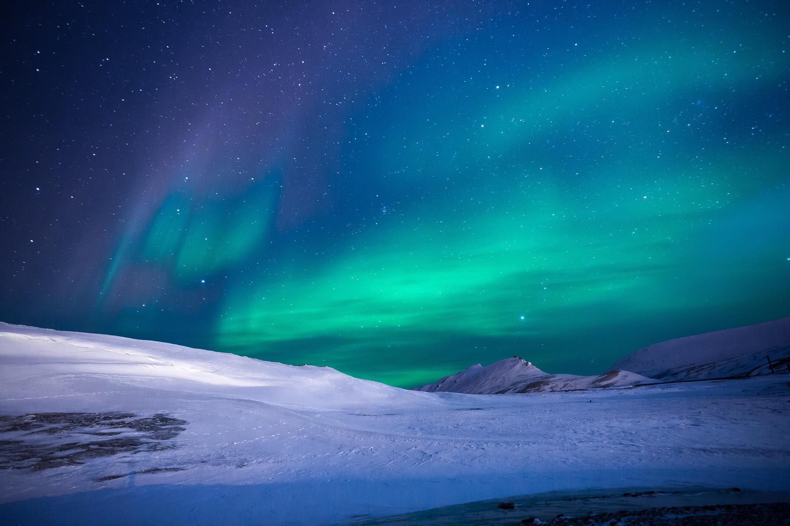

Selamat Datang
Selamat datang di website kami, "Fakta Menarik dari Seluruh Dunia"! Di sini, kamu akan
menemukan
berbagai fakta menarik tentang negara-negara, sejarah, sains, seni, lingkungan, teknologi, dan
banyak lagi. Kami mengundangmu untuk menjelajahi dan menambah pengetahuanmu tentang dunia yang luar
biasa ini. Bersiaplah untuk merasakan keajaiban pengetahuan!
Website ini merupakan tempat yang sempurna bagi para pencari pengetahuan. Dengan konten yang dikemas
secara menarik dan informatif, kami akan membawa kamu dalam perjalanan melintasi benua, melalui
zaman-zaman bersejarah, dan menuju pemahaman yang lebih dalam tentang alam semesta. Setiap halaman
kami dipenuhi dengan fakta-fakta yang menarik, yang dihadirkan dalam bahasa yang mudah dipahami dan
tata letak yang jelas.
Mulai dari geografi hingga seni, dari sains hingga budaya, kami mencakup beragam topik yang akan
memenuhi rasa ingin tahu kamu. Ingin tahu tentang misteri tempat-tempat terpencil di dunia? Atau
menggali lebih dalam tentang penemuan terbaru dalam bidang teknologi? Di sini, kamu akan menemukan
jawaban atas pertanyaan-pertanyaan tersebut dan lebih banyak lagi.
Tidak hanya itu, kami juga menyediakan beberapa fakta-fakta aneh dan unik yang
akan membuat kamu tercengang. Kami yakin bahwa pengetahuan adalah kunci untuk memahami dunia kita
dengan lebih baik, dan kami berkomitmen untuk menyajikan informasi yang akurat dan menarik.
Fakta Menarik Tentang Geografi di Dunia
Selamat datang di bagian Geografi, tempat kamu dapat mempelajari tentang keajaiban alam di seluruh
dunia. Di sini, kamu akan menemukan fakta menarik tentang gunung-gunung yang menjulang tinggi dan
palung-palung yang dalam di lautan. Mari kita menjelajahi dua elemen penting dalam geografi ini:
gunung tertinggi dan palung terdalam di dunia.
Gunung Tertinggi di Dunia
Gunung Everest, yang terletak di Pegunungan Himalaya, adalah gunung paling tinggi di dunia. Dengan
ketinggian mencapai 8.848 meter di atas permukaan laut, gunung ini menantang dan memukau para
pendaki dari seluruh dunia. Puncak Everest, yang dikenal sebagai "Atap Dunia," memiliki daya tarik
yang tak terbantahkan bagi petualang dan pencinta alam. Berikut adalah beberapa
fakta menarik tentang Gunung Everest:
- Tertinggi di Dunia: Gunung Everest adalah titik tertinggi di permukaan bumi. Puncaknya, yang
dikenal
sebagai "Tingkungan Surga," berada di zona kematian karena kurangnya oksigen yang cukup untuk
mendukung kehidupan manusia.
- Ekspedisi Pertama: Ekspedisi pertama yang berhasil mencapai puncak Everest dilakukan oleh Sir
Edmund
Hillary dari Selandia Baru dan Tenzing Norgay, seorang pendaki Sherpa dari Nepal, pada tanggal
29
Mei 1953.
- Jumlah Pendaki: Setiap tahun, ribuan pendaki dari seluruh dunia mencoba mendaki Gunung Everest.
Namun, pendakian ini tetap merupakan tantangan yang sangat berat dan berbahaya, dan tidak semua
pendaki berhasil mencapai puncaknya.
- Gunung Terus Bertambah Tinggi: Sebagai hasil dari pergerakan lempeng tektonik, Gunung Everest
terus
naik sekitar 4 mm setiap tahunnya. Proses ini membuat gunung ini menjadi lebih tinggi dari waktu
ke
waktu.
- Gunung Everest dinamai sesuai dengan nama Sir George Everest, seorang ahli geografi dan
penjelajah Britania Raya yang memetakan India pada abad ke-19.
Palung Terdalam di Dunia
Selanjutnya, kita akan membahas tentang Palung Mariana, yang merupakan palung terdalam di dunia.
Palung Mariana terletak di Samudra Pasifik dekat Kepulauan Mariana. Palung ini mencapai kedalaman
sekitar 11.034 meter di bawah permukaan laut. Palung Mariana membentang sepanjang sekitar 2.550
kilometer dan merupakan palung terdalam yang diketahui di bumi. Berikut adalah beberapa fakta
menarik tentang Palung Mariana:
- Palung Mariana dinamai berdasarkan Mariana, nama seorang Ratu Spanyol dari abad ke-17.
- Kedalaman Palung Mariana membuatnya menjadi tempat yang sangat sulit dijelajahi. Bahkan, manusia
pertama yang mencapai dasar palung ini adalah ilmuwan laut Jacques Piccard dan Letnan Don Walsh
pada tahun 1960.
- Palung Mariana menghadirkan lingkungan yang penuh dengan tekanan yang sangat tinggi, suhu yang
rendah, dan kehidupan laut yang unik. Makhluk-makhluk aneh yang dapat hidup di kondisi tersebut
ditemukan di dalam palung ini.
Fakta Menarik Tentang Sejarah di Dunia
Sejarah manusia dipenuhi dengan peristiwa-peristiwa penting yang membentuk dunia seperti yang kita
kenal saat ini. Dalam artikel ini, kita akan menjelajahi dua aspek yang sangat berpengaruh dalam
sejarah: perang paling terkenal dan penemuan paling penting. Dengan memahami peristiwa-peristiwa
ini, kita dapat mendapatkan wawasan yang lebih dalam tentang perkembangan dan evolusi manusia.
Perang Paling Terkenal - Perang Dunia II
Perang Dunia II adalah salah satu perang paling terkenal dan berdampak besar dalam sejarah manusia.
Konflik ini terjadi antara tahun 1939 hingga 1945, melibatkan banyak negara di seluruh dunia.
Berikut adalah beberapa fakta menarik tentang Perang Dunia II:
- Perang Dunia II dimulai setelah serangan Jerman Nazi ke Polandia pada 1 September 1939. Hal ini
memicu keterlibatan berbagai negara, termasuk Sekutu (seperti Amerika Serikat, Inggris, dan Uni
Soviet) dan Poros (seperti Jerman, Italia, dan Jepang).
- Perang Dunia II melibatkan pertempuran darat, udara, dan laut yang intensif, termasuk peristiwa
penting seperti Pertempuran Stalingrad, Serangan Pearl Harbor, dan Invasi Normandia.
- Dampak perang ini sangat besar, termasuk penyebaran Holocaust, pengembangan senjata nuklir, dan
pembentukan Perserikatan Bangsa-Bangsa (PBB) sebagai upaya untuk mencegah konflik masa depan.
Penemuan Penting - Penemuan Internet

Salah satu penemuan paling penting yang mengubah dunia modern adalah internet. Penemuan ini membawa
perubahan besar dalam cara kita berkomunikasi, bekerja, dan mengakses informasi. Berikut adalah
beberapa fakta menarik tentang Penemuan Internet:
- Internet pertama kali dikembangkan pada tahun 1960-an oleh Departemen Pertahanan Amerika Serikat
sebagai proyek riset ilmiah. Tujuan awalnya adalah untuk memungkinkan pertukaran data antara
komputer-komputer militer.
- Penemuan ini mengarah pada pembuatan World Wide Web (WWW) pada tahun 1990 oleh Sir Tim
Berners-Lee, yang memungkinkan akses mudah ke dokumen-dokumen dan informasi melalui internet.
- Internet telah merevolusi komunikasi global, perdagangan elektronik, pendidikan, dan hiburan.
Kita dapat terhubung dengan orang di seluruh dunia, mencari informasi dengan cepat, dan berbagi
ide-ide secara luas.
Fakta Menarik Tentang Sains
Sains membawa kita dalam perjalanan menakjubkan ke dalam pemahaman tentang alam semesta
dan kemajuan manusia. Dalam artikel ini, kita akan menjelajahi dua aspek menarik dalam bidang sains:
konsep ilmiah yang menarik dan fenomena alam yang unik. Dengan mempelajari konsep
ilmiah yang menarik dan fenomena alam yang luar biasa, kita dapat memperluas pemahaman kita tentang
dunia yang kompleks ini.
Konsep Ilmiah Menarik - Paradoks Grandfather
Salah satu konsep ilmiah menarik adalah Paradoks Grandfather, yang melibatkan perjalanan waktu dan
kemungkinan paradoks yang muncul dalam pengubahan masa lalu. Berikut adalah beberapa fakta menarik
tentang Paradoks Grandfather:
- Paradoks Grandfather menyajikan pertanyaan yang menarik: jika seseorang melakukan perjalanan
waktu ke masa lalu dan membunuh kakeknya sendiri sebelum ayahnya lahir, maka bagaimana mungkin
dia ada di masa sekarang untuk melakukan perjalanan waktu tersebut?
- Konsep ini menimbulkan pertanyaan tentang konsistensi logika dan kemungkinan paradoks dalam
perjalanan waktu. Beberapa teori fisika menyatakan kemungkinan adanya alam semesta paralel atau
pergeseran realitas untuk menjelaskan paradoks seperti ini.
Fenomena Alam Unik - Aurora Borealis

Salah satu fenomena alam yang paling spektakuler adalah Aurora Borealis atau Cahaya Utara, yang
terjadi di wilayah kutub di belahan Bumi utara. Berikut adalah beberapa fakta menarik tentang Aurora
Borealis:
- Aurora Borealis terjadi ketika partikel-partikel bermuatan dari angin matahari berinteraksi
dengan atmosfer Bumi, menghasilkan cahaya yang indah dan berwarna-warni di langit malam.
- Fenomena ini biasanya terlihat sebagai lapisan cahaya hijau yang berkedip-kedip, tetapi juga
bisa termasuk warna-warna seperti merah, biru, dan ungu tergantung pada jenis partikel dan
tingkat aktivitas matahari.
- Aurora Borealis biasanya terjadi di wilayah yang jauh dari cahaya buatan manusia dan langit
malam yang gelap, seperti Norwegia, Alaska, dan Kanada.